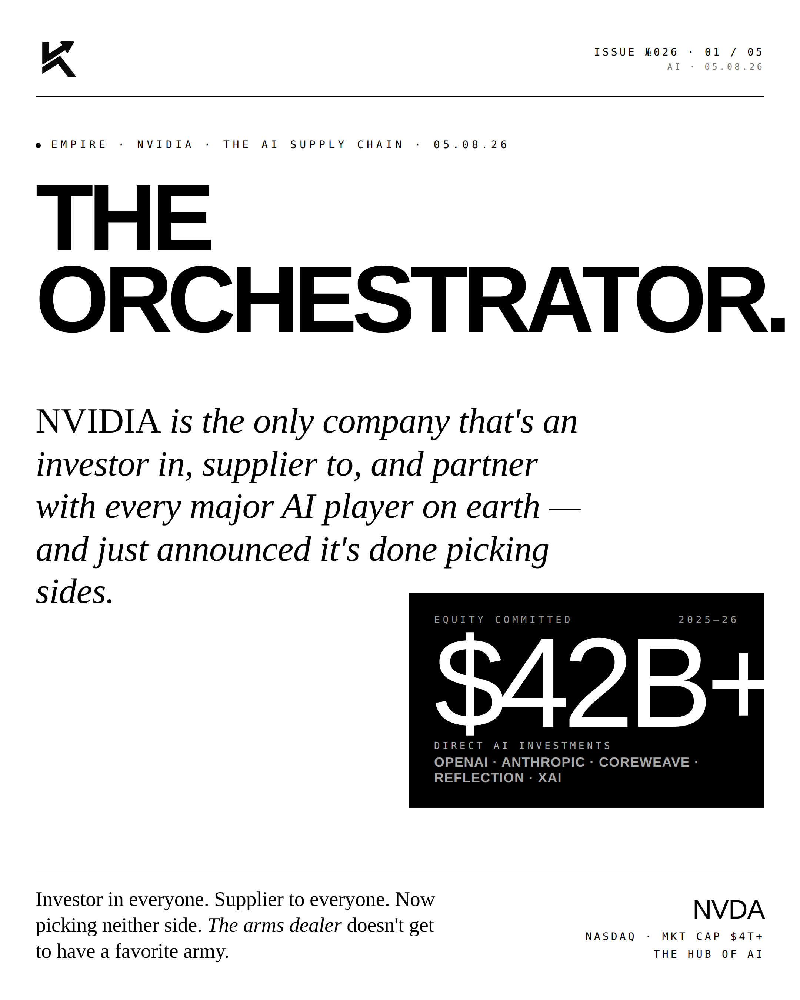
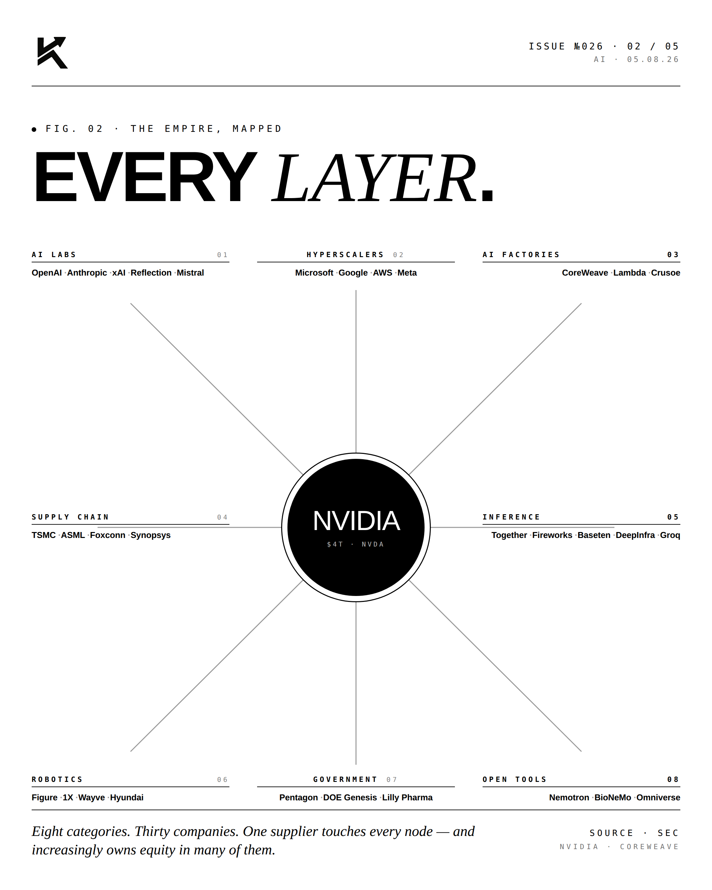
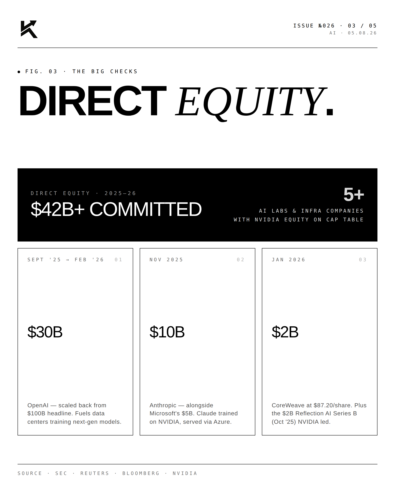
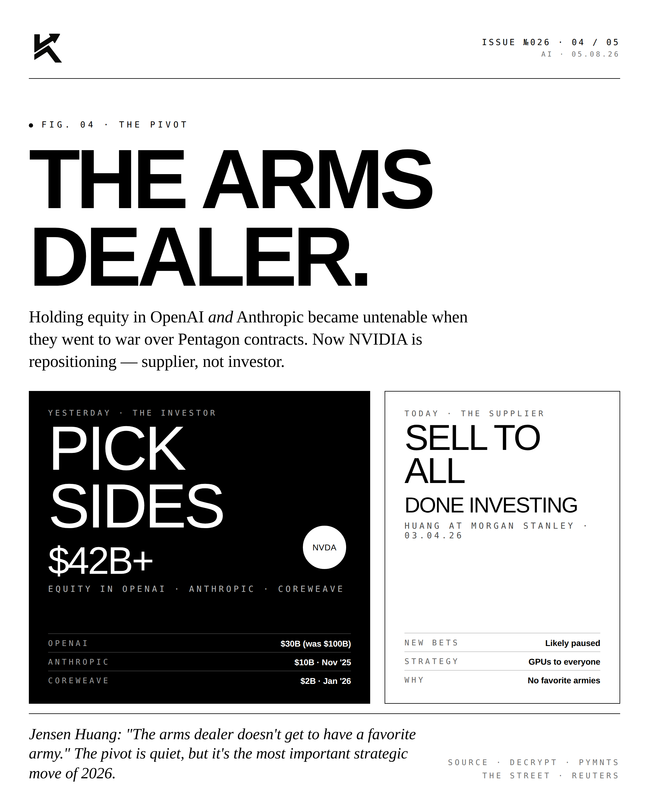

The Orchestrator.
Every layer of the AI stack runs on top of NVIDIA. Models. Agents. Robots. Cars. Drones. The mind map of the AI economy has one orchestrator.

The Mind Map.
NVIDIA chips power: OpenAI, Anthropic, Google DeepMind, xAI, Meta AI, Mistral, Cohere, Perplexity (models). Salesforce, Microsoft, ServiceNow (agents). Tesla Optimus, Figure, 1X, Hyundai Atlas (humanoids). Tesla FSD, Waymo, Cruise (autonomous vehicles). Anduril, Skydio, Shield AI (defense autonomy). The orchestrator owns the substrate.
"AI is not
a feature."JENSEN HUANGFounder & CEO · NVIDIA
"AI is not a feature. It is the platform. And the platform runs on accelerated computing."



Every layer of the AI economy passes through one company. That's the trade.
Disclosure
Personal commentary and editorial analysis. Not investment advice, not an offer or solicitation.